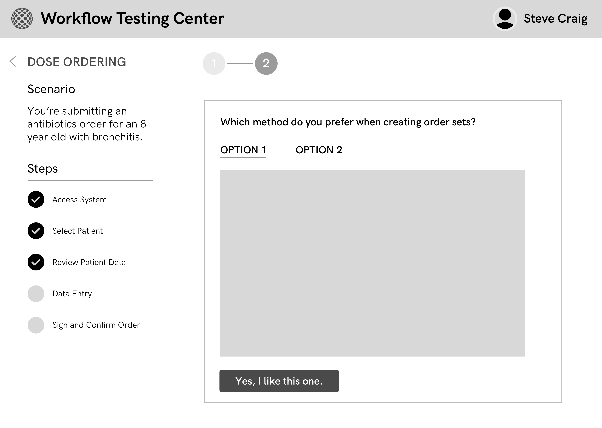
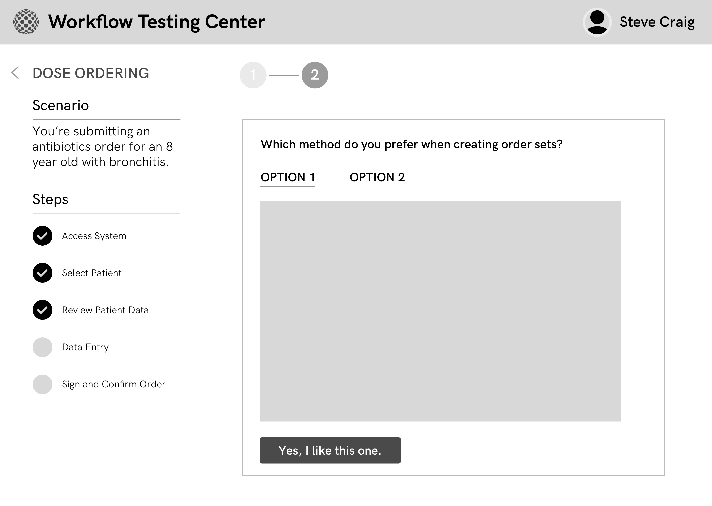
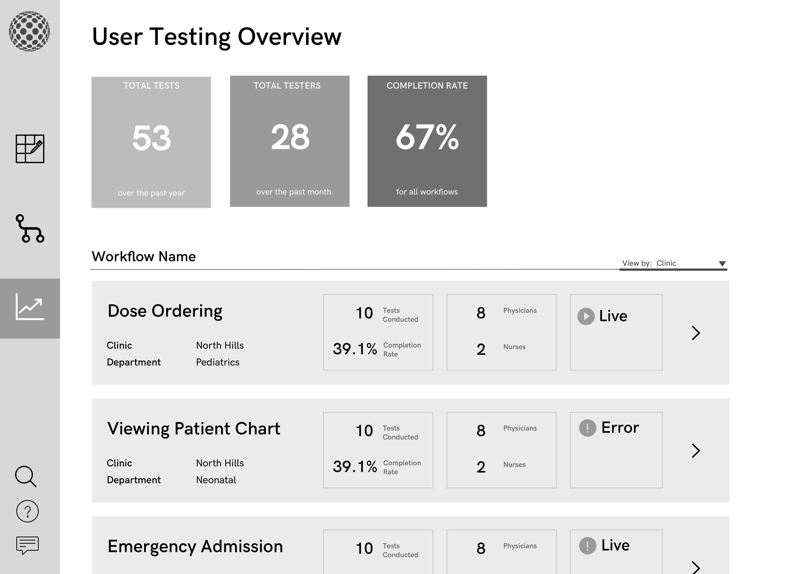

Designing for better patient outcomes.
The problem
Allscripts is an electronic medical record software company. They hired us to improve clinical satisfaction with their main product, Sunrise Clinical Manager.
The insight
We found that Allscripts has difficulty engaging end users in the clinical workflow design process.
The solution
We're designing a web platform for Sunrise users to provide feedback on specific clinical workflows and software decisions.
My role
I conducted and synthesized user interviews, user tested storyboards and wireframes, and am currently designing in high fidelity.
5 people / January 2018 - Present
Design sprinting through sketches, wireframes, and user tests.
What is an electronic medical record?
Healthcare organizations use electronic medical records (EMRs) to manage both patient care and billing.
EMR software is notorious for being difficult to use. The deployment process can be fraught with lack of communication, leading to poor design decisions and user frustration.
Research
After interviewing Allscripts consultants, physicians, nurses, and medical directors, we decided the clinical workflow design process was the area of opportunity we were most excited to explore. Workflow design is when consultants make configuration decisions before building an on-site, custom deployment of the EMR.
Affinity diagramming helped us identify common patterns and gauge the most impactful problems.
Prototyping and User Testing
Starting in March, we started brainstorming solutions to help consultants manage the design of clinical workflows in EMR software. We focused on engaging care providers in ways they could understand, and user tested concepts remotely with Allscripts and in person with local medical professionals.
How might we help implementation consultants create artifacts healthcare providers can understand?

We prototyped a platform for implementation consultants to configure and share low-fi, interactive mockups.
How might we make it easier for healthcare employees to give feedback on EMR workflows?
 

We prototyped a platform for implementation consultants to configure and share low-fi, interactive mockups.
We also prototyped a dashboard for implementation consultants to gather measureable insights from provider feedback—which can potentially serve as a way to guide the decision-making process.

So where are we now?
We're waist-deep in user testing. We're using this as an opportunity to figure out whether we're solving thre right problems for our clients, and more importantly, EMR end users.
As we continue to user test, we'll be increasing the fidelity of our prototypes and formalizing how our potential solution would change the existing Allscripts service model. Hope to report back soon!